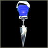

|
L E V E L O F S A N I T Y
A N D S T R E N G T H O F W I L L
To keep Alice alive and kicking, don’t let her lose her head or her heart.

|
|
| Small Sanity |
Large Sanity |
Sanity (red meter) – As Alice takes damage from enemies, or the environment, her Sanity will decrease along with her health. When her Sanity level falls to empty, Alice is
(How might this be put delicately?) DEAD. Below are illustrations of the items Alice needs to replenish her Sanity. Simply walk over them to pick the item up.
|
 |
| Small Will |
Large Will |
Will (blue meter) – Alice must have Will to power her weapons. All weapons, with the exception of the knife, drain her Will. Meta-essence helps her regain Will and recharge the power of the weapons.
|